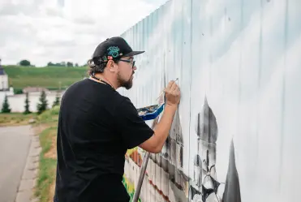

3 часа по скоростной трассе занимает сейчас дорога от Москвы до Старицы, в то время как Пушкин добирался двое суток
Объекты
Компания «Новый город» начала процесс приспособления под современное использование старинных зданий в Старице, имеющих статус памятников культурного наследия регионального значения.
Дом купца Филиппова
Два дома по ул. Пушкина
Бывшая швейная фабрика
Маркетинг территории
Чтобы создать здесь туристический магнит федерального значения, компания «Новый город» занимается территориальным маркетингом — Старица должна занять достойное место на туристической карте России. В планах на ближайшие годы:
Создание и внедрение дизайн-кода Старицы: логотип города также сможет стать «зонтичным» брендом для малых бизнесов, которые базируются в округе.
Разработка и запуск новых туристических маршрутов: культурных, исторических, спортивных.
Наполнение собственных туристических объектов, а также помощь округу в планировании и благоустройстве прогулочных зон и экотроп.
Создание единого инфоцентра для гостей Старицы — как онлайн, в виде сайта и соцсетей, так и оффлайн — туристический офис с кафе в центре города.
Новости

Зону строительства оформили граффити
Компания «Новый город» начала сотрудничество с федеральным агентством по делам молодежи (Росмолодежь) — баннеры, закрывающие строительные...
Вышла большая статья в газете «Ведомости», посвященная новой жизни Старицы и ее ключевом меценате — экс-вице-премьере России, общественном деятеле Викторе Христенко ...
В конце сентября в Старице начинают работать студенты факультета дизайна среды Высшей школы экономики (ВШЭ). В качестве темы дипломной работы группа ...